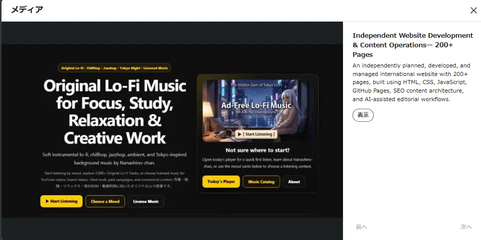

Japanese Localization
- EN → JP localization
- Japanese proofreading
- Content review
- Terminology checks
- Natural-language QA
I help international teams adapt, review, publish, and maintain Japanese-facing digital content. My work combines English-to-Japanese localization, content QA, front-end implementation, SEO structure, and ongoing website operations.

I am a Tokyo-based Japanese localization and digital content specialist. I support English-to-Japanese localization, Japanese proofreading, content review, website publishing, and quality assurance for international digital projects.
In parallel, I independently planned, developed, and currently manage an international music and licensing website with more than 250 English-language pages. The project gives me hands-on experience across information architecture, HTML, CSS, JavaScript, GitHub Pages, SEO, internal linking, source verification, and ongoing publishing operations.
I use AI-assisted research and editorial tools where they improve efficiency, while manually reviewing final content for accuracy, clarity, consistency, terminology, and natural language.
Independently planned, developed, and currently manage an international website with more than 250 English-language pages, supporting music discovery, licensing information, educational content, portfolio presentation, and B2B communications.

A short visual example of an AI-assisted production workflow used to support digital content creation and publishing. AI tools support selected research and editorial steps; all final content is manually reviewed before publication.
Available for freelance and project-based work in Japanese localization, proofreading, content review, website content operations, publishing QA, and SEO support.